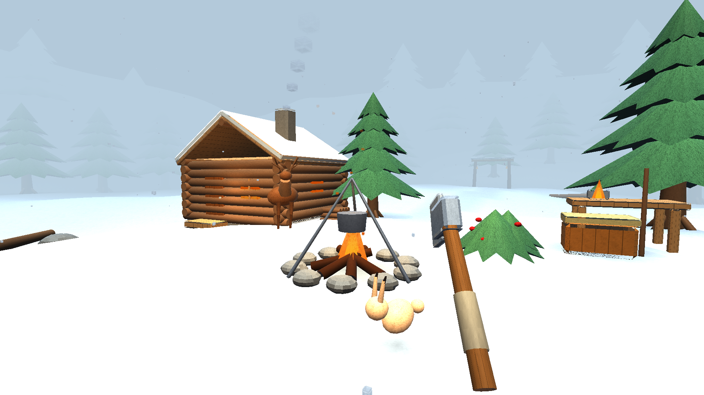
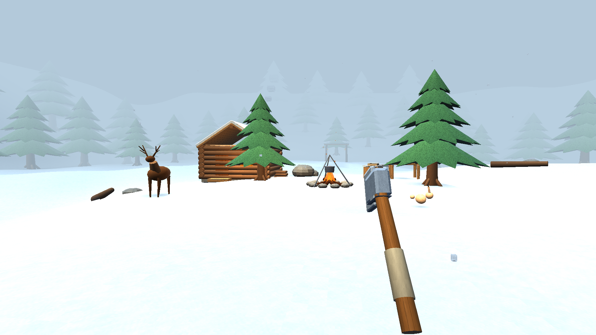

7 аутентичных рендеров 1920×1080 • собственный OpenGL-движок VBO • 10 процедурных материалов
Кадры сняты оффлайн-раннером tools/render/ с полным паритетом геометрии и шейдеров игры
(MeshBuilder + WORLD_FRAGMENT_SHADER + купол неба с горами, звёздами и северным сиянием).
Детали в папке store/screenshots/.

01 • Базовая поляна — очаг лагеряСруб с тёплыми окнами, котелок на треноге, верстак, метель и топор в руках

02 • Панорама лагеряПолевые костры, северный олень, вековые ели и деревянные ворота тропы